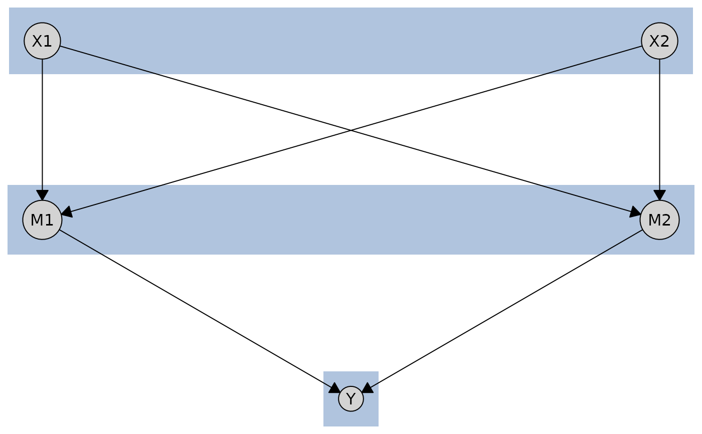

Computes node coordinates for graphs with multiple tiers (layers), placing nodes in parallel rows or columns based on tier assignments. If the graph has not been built yet, it will be built automatically before computing the layout.
Usage
caugi_layout_tiered(x, tiers, orientation = c("columns", "rows"))Arguments
- x
A
caugiobject.- tiers
Tier assignments specifying which tier each node belongs to. Can be provided in multiple formats:
Named list: List where each element is a character vector of node names belonging to that tier. Element names are ignored; tier order is determined by list order (first element = tier 0, etc.).
Named numeric vector: Vector where names are node names and values are tier indices (starting from 0 or 1).
Data.frame: Must contain columns
name(node names) andtier(tier indices).
All nodes must be assigned to a tier, all tiers must be non-empty, and tier indices must be consecutive starting from 0 or 1.
- orientation
Character string specifying the layout orientation:
"columns": Vertical tiers. First tier at left (x=0), subsequent tiers to the right, last tier at right (x=1)."rows": Horizontal tiers. First tier at top (y=1), subsequent tiers below, last tier at bottom (y=0).
Value
A data.frame with columns name, x, y, and tier containing
node names, their coordinates, and tier assignments (0-indexed). The
returned data.frame also has an orientation attribute storing the
orientation used. When passed to plot(), tier information is
automatically extracted, so you don't need to specify tiers again.
Examples
# Create a three-tier causal graph (exposures -> mediators -> outcome)
cg <- caugi(
X1 %-->% M1 + M2,
X2 %-->% M1 + M2,
M1 %-->% Y,
M2 %-->% Y
)
# Option 1: Named list (tier names are just labels)
tiers <- list(
exposures = c("X1", "X2"),
mediators = c("M1", "M2"),
outcome = "Y"
)
layout_rows <- caugi_layout_tiered(cg, tiers, orientation = "rows")
# Option 2: Named numeric vector (0-indexed or 1-indexed both work)
tiers <- c(X1 = 1, X2 = 1, M1 = 2, M2 = 2, Y = 3)
layout_cols <- caugi_layout_tiered(cg, tiers, orientation = "columns")
# Option 3: Data.frame
tiers <- data.frame(
name = c("X1", "X2", "M1", "M2", "Y"),
tier = c(1, 1, 2, 2, 3)
)
layout <- caugi_layout_tiered(cg, tiers, orientation = "rows")
# The layout includes tier information, so plot() works without passing tiers
plot(cg, layout = layout)
